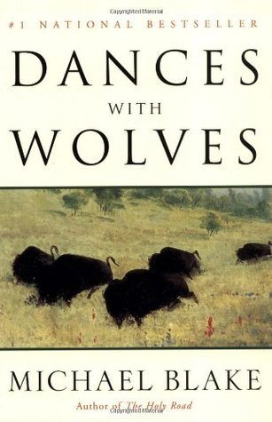

Dances with Wolves
- Read on 2021-02-14
- Rating: ️️️️️
- Format: 🎧 (9 hours 10 minutes)
I only learned about this book within the past year. I really like the movie, so was immediately curious. It didn't disappoint. The movie sticks to the book rather closely, and the differences aren't truly pivotal. I'd like to understand why they opted for representing the Sioux in the movie, yet the book portrays the Comanche. Regardless, I love the imagery of the movie, and having some of those things in mind helped me build my imagination from there. At this point, I'm quite interested in the next book(s) in this series.